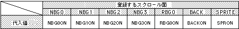

Return to previous page | Return to menu | Go to next page
void
Scroll function
Color offset enable setting
void slColOffsetOn(flag)
Uint16 flag ;
flag screen specification
Sets the surface affected by the color offset value set by the function “slColOffsetA”.
In addition, multiple parameters can be concatenated by connecting multiple parameters using the or operator “|”.
None
For the parameter, substitute the values in the table below according to the scroll plane to be registered.

Note) The values in the above table are defined in “sl_def.h” included with the system.
Reference: Chapter 8 Scroll
slColOffsetOn